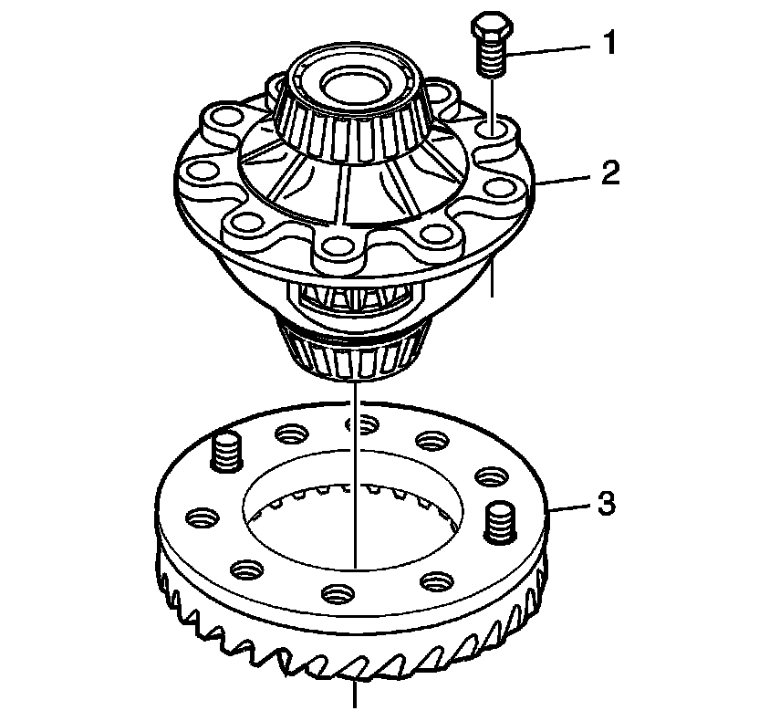

Ring Gear and Differential Housing Assemble
Ring Gear and Differential Housing Assemble

Notice: Refer to Fastener Notice (Fastener Notice) .
1. Install the ring gear (2) onto the differential carrier (3).
2. Install the 10 NEW ring gear bolts (1) in order to align the gear to the hub.
Tighten the 10 ring gear bolts slowly in a criss-cross pattern to 190 N.m (140 lb ft).